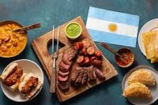
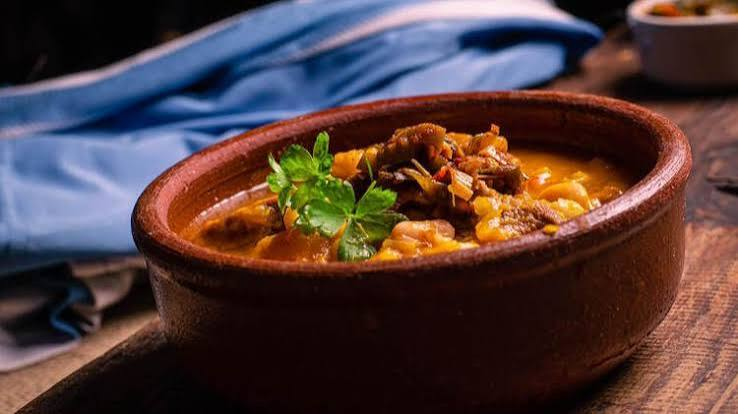

Asado argentino

El asado es un plato tradicional argentino que consiste en carne asada a la parrilla. Es perfecto para compartir con amigos y familiares.
Qué Cocino?
Vamos a explorar juntos el mundo de la cocina argentina (y algún que otro plato internacional).
Tenemos recetas de todo tipo, desde platos principales hasta postres deliciosos. Todas nuestras recetas son fáciles de seguir y están diseñadas para que puedas cocinar en casa con los ingredientes que tengas a mano.
Descubre nuestra selección de platos principales que combinarán perfectamente con tus ingredientes favoritos.

El asado es un plato tradicional argentino que consiste en carne asada a la parrilla. Es perfecto para compartir con amigos y familiares.
Los alfajores de maicena son unos dulces tradicionales argentinos, hechos con una base de maicena y rellenos de dulce de leche, decorados con coco rallado. Tipico de reuniones a la tarde para acompañar con un buen mate.

El locro es un plato típico argentino, preparado con maíz, frijoles y carne. Es ideal para ocasiones especiales y reuniones familiares.